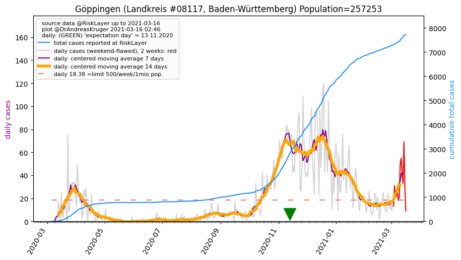
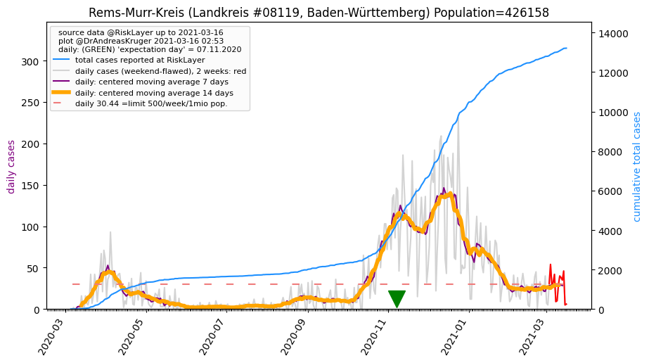
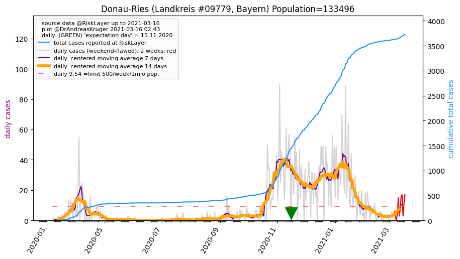
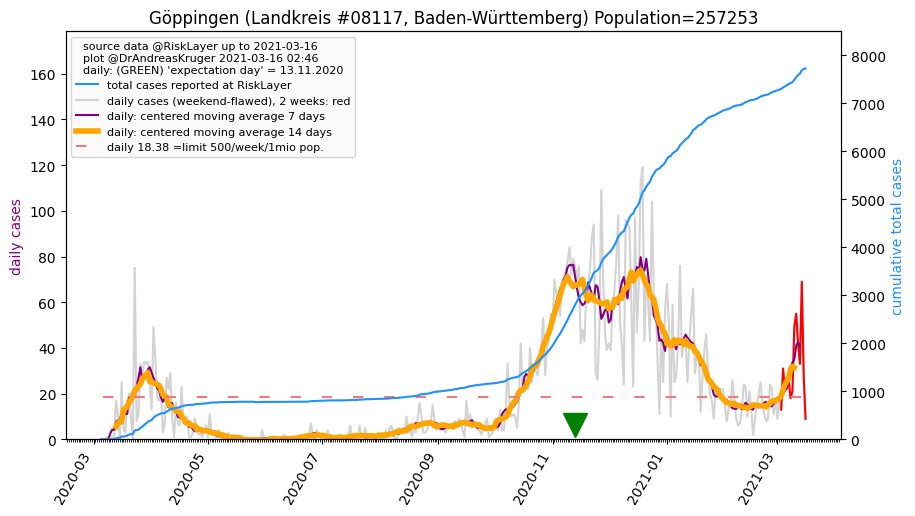
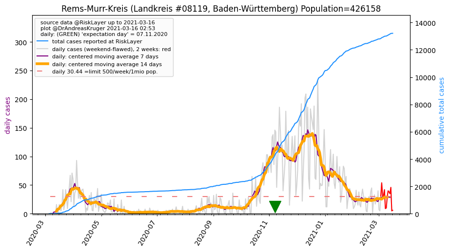
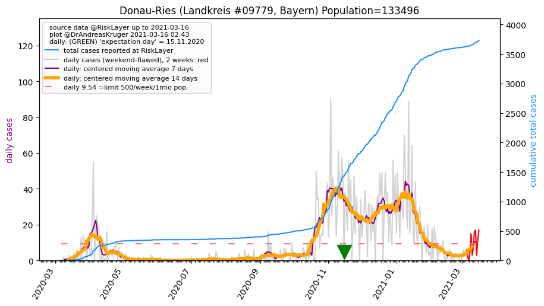

")
")
")


")

")
| Ostalbkreis_LK (0.0 km) |
Heidenheim_LK (24.9 km) |
Schwäbisch Hall_LK (32.5 km) |
| Göppingen_LK (36.3 km)  |
Rems-Murr-Kreis_LK (43.3 km)  |
Dillingen a.d. Donau_LK (44.9 km) |
| Donau-Ries_LK (46.3 km)  |
Ansbach_LK (49.6 km) |
All plots are regenerated with new data every night. Beware this temporary hotspot is an experimental page - it might get removed, so please do not link to it. Instead link to project http://tiny.cc/cov19de.